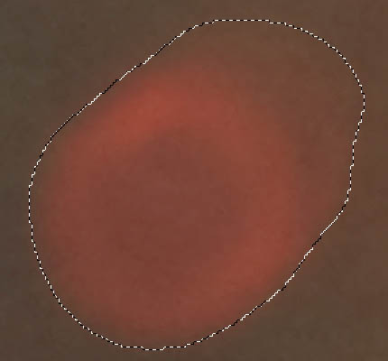
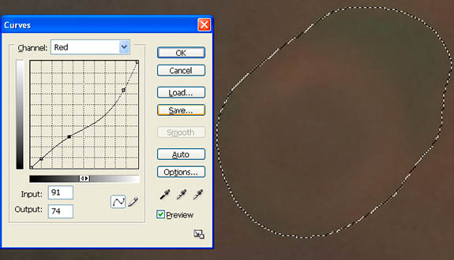
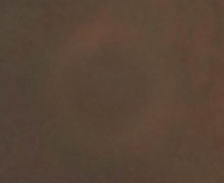
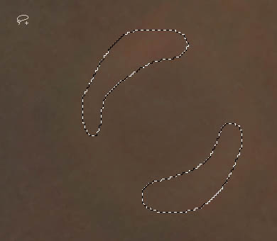
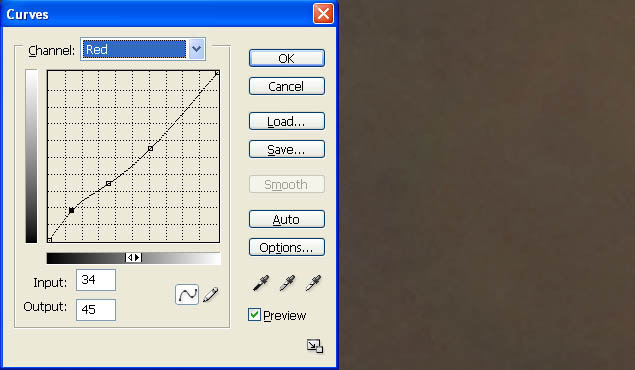
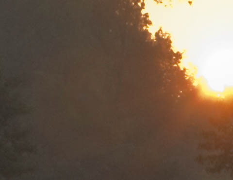
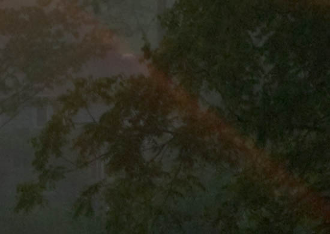
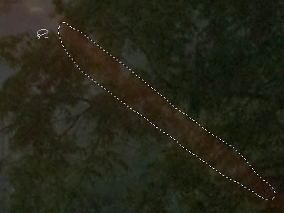
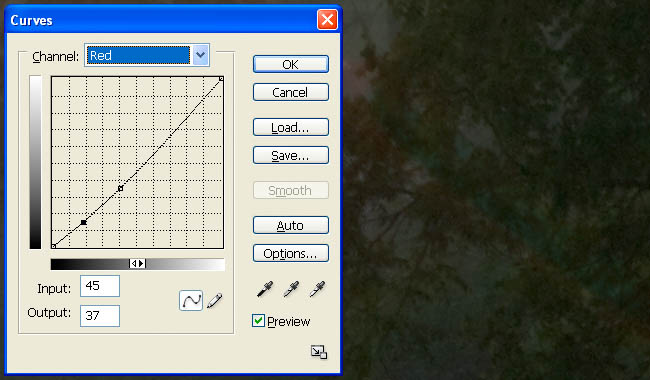
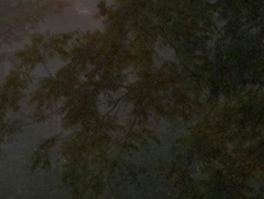

|
Decimating Lens Flare in PhotoshopPage 1, version 1.0, © 2008 by Dale Cotton, all rights reserved Fig. 1: Lens flare (click to download full size version) When a bright light source such as the sun shines directly into a camera lens, flare and flare artifacts are often formed, such as the red doughnut near the centre of Fig. 1. For decades slide film shooters had to either forego such a shot or toss it; now in the digital era we have other options. The easiest way to remove the red donut in Fig. 1 is to do a bit of cloning from a neighbouring area. In many cases, however, there is no similar area to clone from, so we'll go through the exercise of removing the red doughnut to learn the technique: Example 1 &ndash red doughnutTo follow along: right click on Fig. 1, download the full scale image, then open it in Photoshop (most any version will do):  Fig. 2: Lasso offending object 1. Lasso flare object then feather slightly.  Fig. 2: Lasso offending object 2. Open Curves dialogue, choose closest matching colour channel, then create a curve that comes closest to removing flare colour. 3. Still in the Curves dialogue, go back to RGB channel and create curve that cancels as much of any brightness or darkness difference between the flare artifact and the surrounding area.  Fig. 3: After History Brush work (greenish area upper right is gone) 4. Use history brush at low opacity to undo any area that goes too far.  Fig. 4: Select any remaining problem areas  Fig. 5: Create new adjustment curve Repeat steps 1 through 4 for any areas not fully fixed by first iteration.  Fig. 6: Final result Example 2 &ndash sun ray Fig. 7: Ray obscuring branches (detail from Fig. 1) Another example of flare artifacting in Fig. 1 are the rays rediating from the rising sun. I don't consider them offensive, but we'll remove a segment of one to show that this technique works just as well in areas in which detail exists but has been obscured.  Fig. 8: Lasso problem area 1. Lasso the offending flare area, then feather a small amount, such as 5 pixels.  Fig. 9: Neutralize with red channel curve 2. Use the same procedure as in steps 2 - 4 above.  Fig. 10: Final result We're not done yet; go to page 2 – where the fun really begins.
|
{kind=link}